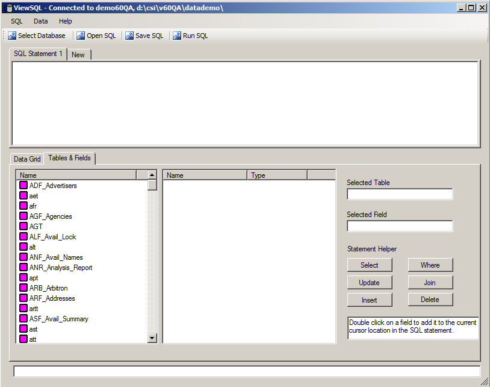
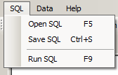
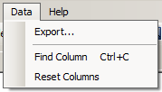
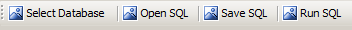
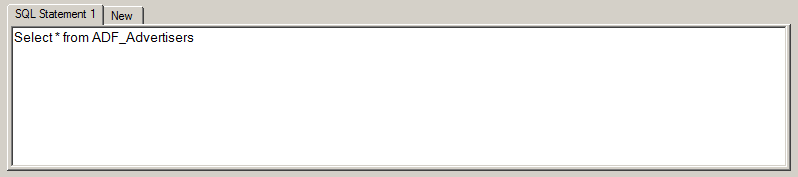
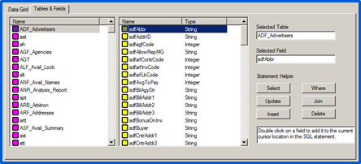
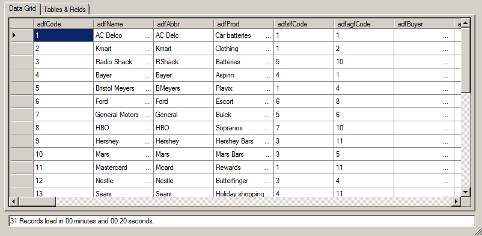
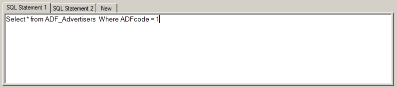

View SQL Utility
The View SQL program is a standalone utility that allows users to execute SQL statements on the Pervasive database to review or correct records. It can be accessed from the Traffic or Affiliate system via the Utilities menu.
When the utility launches, you will see the main screen, as shown below. Run SQL statements on this screen by entering a SQL statement in the SQL Statement window, then pressing the Run SQL button.

The results will appear on the Data Grid screen after processing is complete. (Note: the utility looks and works identically whether you run it from the Traffic or Affiliate menu.)
Main Screen Overview
This section describes all the options on the main screen.
SQL Menu

- Open SQL: Select this option to load a saved SQL statement. When you select Open SQL (or press F5), a browse window will appear, which you can use to browse to a saved SQL statement in .TXT format
- Save SQL: Select this option to save the SQL statement that was entered in the SQL statement area. After selecting this option (or pressing Ctrl+S), a browse window will appear. Browse to a save location, enter a filename for the SQL statement you wish to save, and then press Save
- Run SQL: Select this option (or press F9) to execute a SQL statement that has been entered in the SQL statement area
Data Menu

- Export: This button allows the results from the query to be saved to a comma delimited text file. It will prompt you for the save location and file name. It also prompts you whether to include columns names as the first line in the file or not. All fields are comma delimited with a double quote text qualifier
- Find Column: This feature allows you to find and tag column names in the data grid
- Reset Columns: This option resets highlighted columns in the data grid (after using the Find Column feature)
Help Menu
- About: The About menu shows information about the View SQL program
Main Menu Buttons
Near the top of the main menu are four buttons used for different operations: Select Database, Open SQL, Save SQL, and Run SQL.

- Select Database: Opens the “Select Database” window and is used to select a database. All 32-bit DSN names found on the PC for Pervasive are shown. The DSN name, dictionary location and data location is provided in the list. To choose an item in the list, either double click on it or select it and press the “Select” button
- Open SQL: Select this option to load a saved SQL statement
- Save SQL: Select this option to save the SQL statement that has been entered in the SQL statement area
- Run SQL: Select this option (or press F9) to execute a SQL statement that has been entered in the SQL statement area
Note that the Open SQL, Save SQL, and Run SQL buttons perform the same task as the corresponding buttons on the SQL menu.
SQL Statement Area
Enter SQL Statements in this section. An example of a SQL Statement appears below.

Press the “New” tab to enter a new SQL Statement without overwriting a previously entered statement. You can have multiple tabs with different SQL statements on them.
Tables & Fields
The Tables & Fields area – shown below – lists each database table on the left side of the window. After selecting a table, the fields within that table will appear in the center section of the window. The Tables and Fields area can be used for creating custom SQL statements.

The Select, Update, Insert, Where, Join, and Delete buttons in the lower right corner can also be used to create custom SQL statements.
Data Grid
After executing a “View” type SQL statement, any data found that matches the query will appear in the Data Grid, which is a View Only screen – in other words, no data can be changed on this screen. The data shown in this grid is sortable by clicking on any column header.

The time it took for the query to run appears in the window at the bottom of the screen.
How to Enter and Run a SQL Statement
This section describes how to enter and run a SQL Statement using the View SQL utility.
Step 1: Enter the SQL statement you wish to run in the SQL Statement window.
There are several ways to enter a SQL statement into the View SQL utility:
- Open SQL button: Load a SQL statement using the “Open SQL” button (or by pressing F5). This will allow you to browse to a .TXT file with a SQL statement on it, which you can then click on so that the SQL statement appears in the SQL Statement window of the utility
- Copy and Paste: Copy and paste a SQL statement from another source – for example, from an email – into the SQL Statement window
- Manual: If you are familiar with SQL, you can manually enter a SQL statement directly into the SQL Statement window

Step 2: Double check the SQL statement to confirm that there are no errors.
Step 3: Press the Run SQL button (or press F9) to execute the SQL statement.
There are two basic types of operations: View, and Update/Delete operations.
- View operations can be run at any time by any user, and will start automatically after pressing the Run SQL button or pressing F9
- To run an Update/Delete operation, you will need a password supplied by Counterpoint. For assistance running an Update/Delete operation, please contact Support@counterpoint.net
Step 4: After the operation completes, you can view the results on the Data Grid.